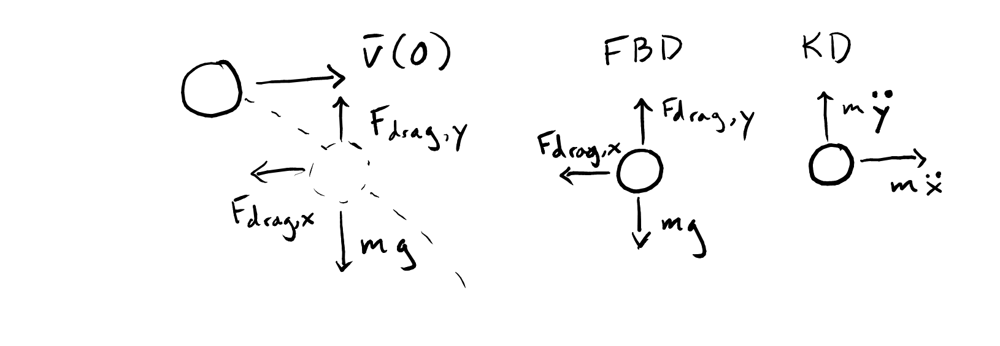

Homework
Contents
Content modified under Creative Commons Attribution license CC-BY 4.0, code under BSD 3-Clause License © 2020 R.C. Cooper
Homework¶
import numpy as np
import matplotlib.pyplot as plt
plt.style.use('fivethirtyeight')
Problems Part 1¶
Instead of using \(\frac{\Delta v}{\Delta t}\), you can use the numpy polyfit to determine the acceleration of the ball.
a. Use your coordinates from the saved .npz file you used above to load your projectile motion data
npz_coords = np.load('projectile_coords.npz') t = npz_coords['t'] x = npz_coords['x'] y = npz_coords['y']
b. Calculate \(v_x\) and \(v_y\) using a finite difference again, then do a first-order polyfit to \(v_x-\) and \(v_y-\) vs \(t\). What is the acceleration now?
c. Now, use a second-order polynomial fit for x- and y- vs t. What is acceleration now?
d. Plot the polyfit lines for velocity and position (2 figures) with the finite difference velocity data points and positions. Which lines look like better e.g. which line fits the data?
Not only can you measure acceleration of objects that you track, you can look at other physical constants like coefficient of restitution, \(e\) .
During a collision with the ground, the coefficient of restitution is
\(e = -\frac{v_{y}'}{v_{y}}\) .
Where \(v_y'\) is y-velocity perpendicular to the ground after impact and \(v_y\) is the y-velocity before impact.
a. Calculate \(v_y\) and plot as a function of time from the data
'../data/fallingtennisball02.txt'b. Find the locations when \(v_y\) changes rapidly i.e. the impact locations. Get the maximum and minimum velocities closest to the impact location. Hint: this can be a little tricky. Try slicing the data to include one collision at a time before using the
np.minandnp.maxcommands.c. Calculate the \(e\) for each of the three collisions
Problems Part 2¶
Integrate the
fall_dragequations for a tennis ball and a lacrosse ball with the same initial conditions as above. Plot the resulting height vs time.
Given: y(0) = 1.6 m, v(0) = 0 m/s
ball |
diameter |
mass |
|---|---|---|
tennis |
\(6.54\)–\(6.86 \rm{cm}\) |
\(56.0\)–\(59.4 \rm{g}\) |
lacrosse |
\(6.27\)–\(6.47 \rm{cm}\) |
\(140\)–\(147 \rm{g}\) |
Is there a difference in the two solutions? At what times do the tennis ball and lacrosse balls reach the ground? Which was first?

The figure above shows the forces acting on a projectile object, like the lacrosse ball from Flipping Physics that you analyzed in lesson 01_Catch_Motion. Consider the 2D motion of the lacrosse ball, now the state vector has two extra variables,
\( \mathbf{y} = \begin{bmatrix} x \\ v_x \\ y \\ v_y \end{bmatrix}, \)
and its derivative is now,
\(\dot{\mathbf{y}} = \begin{bmatrix} v_x \\ -c v_x^2 \\ v_y \\ g - cv_y^2 \end{bmatrix},\)
where \(c= \frac{1}{2} \pi R^2 \rho C_d\).
Problems Part 3¶
Show that the implicit Heun’s method has the same second order convergence as the Modified Euler’s method. Hint: you can use the same code from above to create the log-log plot to get the error between \(2\cos(\omega t)\) and the
heun_stepintegration. Use the same initial conditions x(0) = 2 m and v(0)=0m/s and the same RHS function,springmass.

In the image above, you have a spring, mass, and damper. A damper is designed to slow down a moving object. These devices are typical in automobiles, mountain bikes, doors, any place where oscillations may not be desired, but motion is required. The new differential equation, if F(t)=0, that results from this addition is
\(\ddot{x} = -\frac{b}{m}\dot{x} -\frac{k}{m}x\)
or keeping our natural frequency above,
\(\ddot{x} = -\zeta\omega\dot{x} -\omega^2x\)
where \(\zeta\) is a new constant called the damping ratio of a system. When \(\zeta\gt 1\), there are no oscillations and when \(0<\zeta<1\) the system oscillates, but decays to v=0 m/s eventually.
Create the system of equations that returns the right hand side (RHS) of the state equations, e.g. \(\mathbf{\dot{y}} = f(\mathbf{y}) = RHS\)
Use \(\omega = 2\) rad/s and \(\zeta = 0.2\).
def smd(state):
'''Computes the right-hand side of the spring-mass-damper
differential equation, without friction.
Arguments
---------
state : array of two dependent variables [x, v]^T
Returns
-------
derivs: array of two derivatives [v, zeta*w*v - w*w*x]^T
'''
## your work here ##
return derivs
Use three methods to integrate your
smdfunction for 3 time periods of oscillation and initial conditions x(0)=2 m and v(0)=0 m/s. Plot the three solutions on one graph with labels.
a. Euler integration
b. second order Runge Kutta method (modified Euler method)
c. the implicit Heun’s method
How many time steps does each method need to converge to the same results? Remember that each method has a certain convergence rate
Problems Part 3¶
One of the main benefits of a bracketing method is the stability of solutions. Open methods are not always stable. Here is an example. One way engineers and data scientists model the probability of failure is with a sigmoid function e.g. this Challenger O-ring case study
The Challenger explosion was a terrible incident that occurred due to the failure of an O-ring. The post-mortem data analysis showed that at low temperatures the O-rings were brittle and more likely to fail. You can use the function \(\sigma(T)\) to determine the point at which there is a 50% chance of O-ring failure. Using the pass-fail data, the two constants are
\(a_0 = 15.043\)
\(a_1 = 0.232\)
a. Plot the function \(\sigma(T)\) for \(T=0-100^{o}F\). Where do you see the function cross 50% (0.5)?
b. Create two functions f_T and dfdT where f_T=\(f(T)=\sigma(T) - 0.5\) and dfdT=\(\frac{df}{dT}\)
c. Use the incsearch and newtraph functions to find the root of f(T). When does Newton-Raphson fail to converge? Why does it fail? Hint: if you’re stuck here, take a look at this youtube video finding an interval of convergence for the Newton-Raphson method. Look at the animation of how the method converges and diverges.
In the Shooting Method example, you determined the initial velocity after the first bounce by specifying the beginning y(0) and end y(T) for an object subject to gravity and drag. Repeat this analysis for the time period just after the second bounce and just before the third bounce. The indices are given below for t[1430:2051] = 1.43-2.05 seconds.
a. What is the velocity just after the second bounce?
b. What is the coefficient of restitution for the second bounce? Hint: use the ratio of the last velocity from above to the initial velocity calculated here.
filename = '../data/fallingtennisball02.txt'
t, y = np.loadtxt(filename, usecols=[0,1], unpack=True)
i0=1430
ie=2051
print(t[i0],t[ie])
plt.plot(t,y)
plt.plot(t[i0:ie],y[i0:ie],'s')
1.4300000000009008 2.051000000004969
[<matplotlib.lines.Line2D at 0x7f2004232730>]